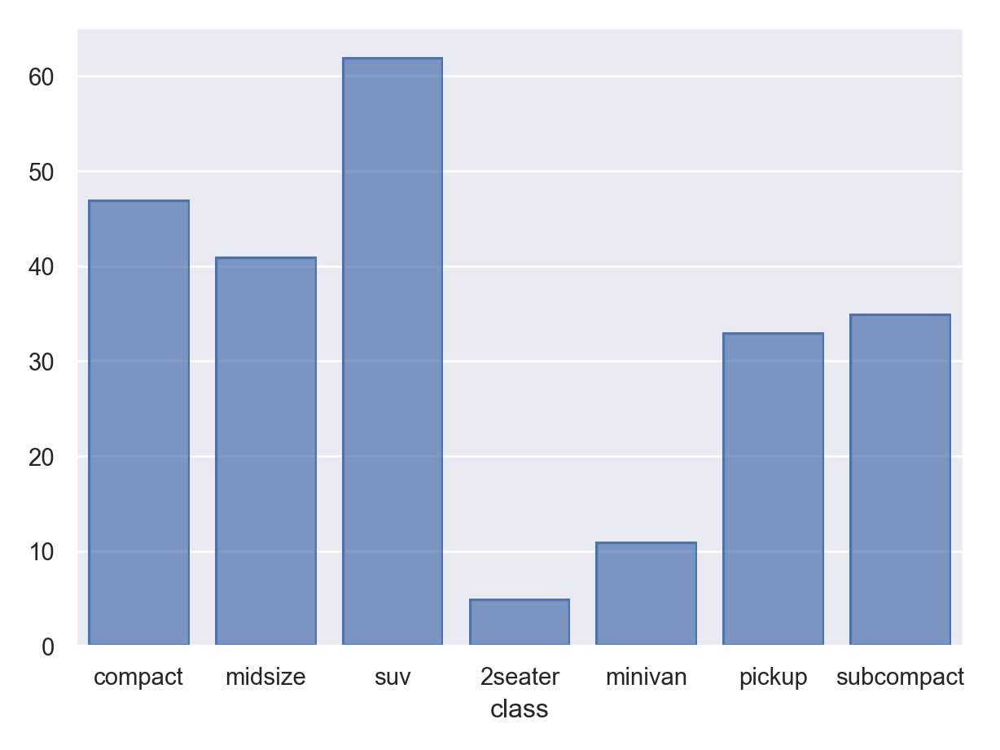

library(ggplot2)
data("mpg")The seaborn.objects Interface
Learning Objectives
- Data visualization with seaborn.objects.
- https://seaborn.pydata.org/tutorial/objects_interface.html
Python Overview
| In R I Want | In Python I Use |
|---|---|
| Base R | numpy |
| dplyr/tidyr | pandas |
| ggplot2 | matplotlib/seaborn |
I previously taught how to use the basic seaborn interface. But in 2022 the author introduced an interface more similar to ggplot which seems to be the future of the package. So here is a lecture on the seaborns.objects interface.
This interface is experimental, doesn’t have all of the features you would need for data analysis, and will likely change. But I think it looks cool.
Import Matplotlib and Seaborn, and Load Dataset
R
All other code will be Python unless otherwise marked.
import matplotlib.pyplot as plt # base plotting functionality
import seaborn as sns # Original interface
import seaborn.objects as so # ggplot2-like interface
mpg = r.mpgBasics
Use
so.Plot()to instantiate aPlotobject and define asthetic mappings.- Just like
ggplot().
- Just like
Use the
.add()method of thePlotobject to add geometric objects and a statistical transformation.As in ggplot, each aesthetic mapping is followed by a statistical transformation before plotting. But unlike in ggplot, you need to specify this statistical transformation manually.
- E.g. aggregating a categorical variable into a counts before plotting those counts on the y-axis.
- E.g. binning a quantitative variable to make a histogram.
You specify the statistical transformation as the second argument in
.add().
One Quantitative Variable: Histogram
Notice that we need to specify the
so.Hist()statistical transformation to generate a histogram.We use the
so.Bars()geometric object to plot it after the statistical transformation.pl = ( so.Plot(mpg, x = "hwy") .add(so.Bars(), so.Hist(bins = 10)) ) pl.show()
One Categorical Variable: Barplot
We use the
so.Bar()geometric object after theso.Count()statistical transformation.pl = ( so.Plot(mpg, x = "class") .add(so.Bar(), so.Count()) ) pl.show()
so.Bar()(for categorical data) andso.Bars()(for quantitative data) seem to be only slightly different based on the defaults.
Dodging Barplots
If you are creating two barplots, annotated by color, you need to be explicit that the bars should dodge eachother with a
so.Dodge()transformation.pl = ( so.Plot(mpg, x = "class", color = "drv") .add(so.Bar(), so.Count(), so.Dodge()) ) pl.show()
One Quantitative Variable, One Categorical Variable: Boxplot
This interface is currently (November 2022) missing boxplotting functions, so you need to use the old interface.
plt.clf() sns.boxplot(data = mpg, x = "class", y = "hwy") plt.show()
plt.clf()I think this is the closest thing to a boxplot you can get right now:
pl = ( so.Plot(mpg, x = "class", y = "hwy") .add(so.Dash(width = 0.4), so.Perc()) .add(so.Range()) .add(so.Range(), so.Perc([25, 75]), so.Shift(x=0.2)) .add(so.Range(), so.Perc([25, 75]), so.Shift(x=-0.2)) ) pl.show()
Two Quantitative Variables: Scatterplot
Base scatterplot uses the
so.Dots()geometric object:pl = ( so.Plot(mpg, x = "displ", y = "hwy") .add(so.Dots()) ) pl.show()Use the
so.Jitter()statistical transformation to make a jittered scatterplot.pl = ( so.Plot(mpg, x = "displ", y = "hwy") .add(so.Dots(), so.Jitter(1)) ) pl.show()
Use
so.Line()(geometric object) andso.PolyFit()(statistical transformation) to add a smoother.pl = ( so.Plot(mpg, x = "displ", y = "hwy") .add(so.Dots()) .add(so.Line(), so.PolyFit()) ) pl.show()- I don’t think it does lowess or gam or splines yet, but just a polynomial, which is not optimal. You can control the order of the polynomial by the
orderargument.
pl = ( so.Plot(mpg, x = "displ", y = "hwy") .add(so.Dots()) .add(so.Line(), so.PolyFit(order = 1)) ) pl.show()- I don’t think it does lowess or gam or splines yet, but just a polynomial, which is not optimal. You can control the order of the polynomial by the
Annotate by a third variable by adding a color mapping:
pl = ( so.Plot(mpg, x = "displ", y = "hwy", color = "drv") .add(so.Dots()) .add(so.Line(), so.PolyFit(order = 1)) ) pl.show()
Faceting
Facet by the
.facet()method.pl = ( so.Plot(mpg, x = "displ", y = "hwy") .facet(row = "drv") .add(so.Dots()) ) pl.show()
Customizing Look
You can change the scaling using the
.scale()method. E.g. here is a \(\log_2\) transformation for the \(x\)-axis.pl = ( so.Plot(mpg, x = "displ", y = "hwy") .add(so.Dots()) .add(so.Line(), so.PolyFit(order = 1)) .scale(x = "log2") ) pl.show()You can change the labels by
.label().pl = ( so.Plot(mpg, x = "displ", y = "hwy") .add(so.Dots()) .label(x = "Displacement (L)", y = "Highway MPG") ) pl.show()You can change the theme using
.theme(). But it is a little verbose right now.from seaborn import axes_style pl = ( so.Plot(mpg, x = "displ", y = "hwy") .add(so.Dots()) .add(so.Line(), so.PolyFit(order = 1)) .theme({**axes_style("whitegrid"), "grid.linestyle": ":"}) ) pl.show()
Exercises
Consider the palmer penguins data, which you can load via
penguins = sns.load_dataset("penguins")
penguins.info()<class 'pandas.core.frame.DataFrame'>
RangeIndex: 344 entries, 0 to 343
Data columns (total 7 columns):
# Column Non-Null Count Dtype
--- ------ -------------- -----
0 species 344 non-null object
1 island 344 non-null object
2 bill_length_mm 342 non-null float64
3 bill_depth_mm 342 non-null float64
4 flipper_length_mm 342 non-null float64
5 body_mass_g 342 non-null float64
6 sex 333 non-null object
dtypes: float64(4), object(3)
memory usage: 18.9+ KBMake a visualization of bill length versus bill depth, annotated by species.
Add OLS lines to for each species to the same plot object you created in part 1 (don’t rerun
so.Plot()).Use
pandas.cut()to convert body mass into five equally spaced levels.Facet your plot from part 2 by the above transformation. You will have to redo the object since we are using a different data frame here.
Make a visualization for the number of each species in the dataset. Make sure you have good labels.